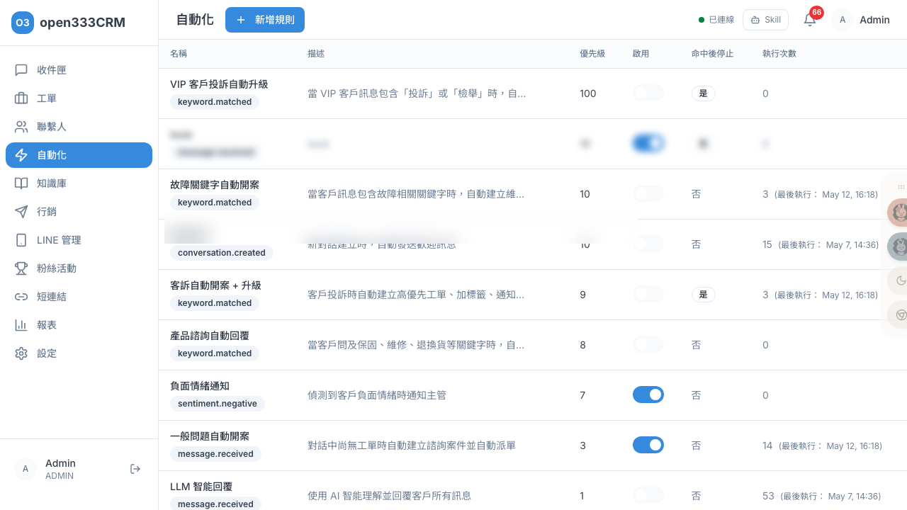

CHAPTER 04 · 自動化與知識
自動化規則
用「事件觸發 → 條件判斷 → 執行動作」的規則引擎，讓系統自動回覆訊息、建立工單、指派客服、打標籤，把重複的工作交給機器。
1 功能總覽
自動化是一套規則引擎。每條規則像一個「如果…就…」的指令：當某個事件發生（觸發），且滿足某些條件時，就依序執行一串動作。它能把客服每天重複做的事交給系統，例如「客戶傳『退貨』就自動回退貨流程」、「SLA 逾期就自動通知主管」。
觸發
事件發生
如收到訊息、工單建立
判斷
條件符合？
AND / OR 條件組合
執行
依序做動作
回覆 / 建單 / 指派 / 打標籤
2 規則列表
列表以表格呈現所有規則，欄位包含名稱（含觸發事件徽章）、描述、優先級、啟用開關、命中後停止、執行次數（含最後執行時間）。

「啟用」欄是可點擊的開關，直接切換規則的開關，不用進編輯頁。
⚠️
新建立的規則預設是「不啟用」的——建好後要記得在列表把開關打開，規則才會生效。刪除規則是軟刪除（停用），不是真的抹掉。
3 一條規則的組成
點「新增規則」進入編輯頁，一條規則由四塊組成：
| 卡片 | 做什麼 |
|---|---|
| 基本設定 | 名稱、描述、觸發事件、優先級、啟用、命中後停止 |
| 條件 | 用建構器組合 AND/OR 條件 |
| 動作 | 設定條件滿足時要執行的動作（依序執行） |
| 測試 / 模擬執行 | （編輯既有規則時）貼 JSON 驗證觸發是否正確 |
基本設定的兩個關鍵開關
| 設定 | 意義 |
|---|---|
| 優先級（預設 10） | 數字越大越先評估。搭配「命中後停止」可做攔截型規則 |
| 啟用（預設關） | 要打開規則才會生效 |
| 命中後停止（預設關） | 勾選後，此規則一命中，同一次事件就不再往下跑其他規則——適合當「高優先攔截」 |
4 觸發事件
觸發事件決定「什麼時候檢查這條規則」。共 20 種，分五類：
| 類別 | 事件 |
|---|---|
| 訊息 | 收到訊息、收到 Postback、關鍵字命中 |
| 對話 | 新對話建立 |
| 工單 | 建立 / 更新 / 升級 / 關閉 / 狀態變更 / 指派 |
| 聯繫人 | 建立 / 更新 / 加標籤 |
| SLA | 首次回應、解決期限、客戶等待的「即將逾期 / 已逾期」 |
💡
選「關鍵字命中」時會多出關鍵字設定區：逐一輸入關鍵字，並選「任一命中」或「全部命中」。比對是不分大小寫、用「包含」判斷——所以「營業」會被「請問你們營業時間？」命中。
⚠️
每種事件能用的「條件欄位」與「動作」不同（例如只有 SLA 事件才能用 SLA 相關條件）。因此改觸發事件時，系統會清空已設好的條件與動作——請先確定觸發事件再設條件動作。
5 條件設定
在「條件」卡用建構器組合條件（可加 AND/OR 群組）。每條條件是「欄位 + 運算子 + 值」。
運算子
等於 / 不等於 / 大於（等於）/ 小於（等於）/ 包含於 / 不包含於 / 包含 / 包含任一 / 包含全部 / 不包含 / 有值 / 無值。其中「有值 / 無值」不用填值，其餘都要填值。
常用條件欄位
| 類別 | 欄位範例 |
|---|---|
| 聯絡人 | 名稱、渠道、標籤、語言、是否 VIP、開啟案件數 |
| 訊息 / 對話 | 訊息內容、對話渠道、對話狀態 |
| 案件 | 狀態、優先級、分類、負責客服、團隊 |
| SLA | 類型、狀態、剩餘 / 逾期分鐘、升級層級 |
| 情緒 | 最新情緒（正面 / 中性 / 負面）、負面情緒次數 |
ℹ️
可用的條件欄位會隨所選觸發事件變動——例如「SLA 剩餘分鐘」只在「SLA 即將逾期」事件出現。UI 只會列出當前事件能用的欄位。
6 動作類型
條件滿足時要做的事，依設定順序執行。共 13 種：
| 動作 | 說明 |
|---|---|
| 傳送訊息 | 回覆指定文字內容 |
| LLM 智能回覆 | 用 AI 生成回覆（可自訂系統提示） |
| KB 知識庫回覆 | 從知識庫找答案自動回覆 |
| 傳送素材 | 回覆指定的訊息素材（圖片 / Flex / 輪播） |
| 建立工單 / 更新狀態 / 升級 / 設定優先級 | 對工單做各種操作 |
| 新增標籤 / 移除標籤 | 對聯繫人打標籤 |
| 指派客服 / 指派機器人 | 轉給人工或 Bot |
| 傳送通知 / 通知主管 | 發送內部通知（通知主管會發給所有主管+管理員） |
⚠️
幾個眉角：①「指派客服」要填客服的 UUID（一長串識別碼，非姓名）。②「傳送訊息 / 傳送素材」需要有對話才能送，主要用在「關鍵字命中」的回覆場景。③「升級工單 / 設定優先級」若不填新優先級，系統會自動提高一級。④「傳送素材」有渠道防呆——素材渠道與對話渠道不符會自動略過，避免送出空訊息。
7 執行順序與命中後停止
當一個事件發生，系統會撈出「該事件、已啟用」的所有規則，依優先級由高到低逐條評估。這裡有兩個重要機制：
- 命中後停止：若某條規則勾了「命中後停止」且命中，就不再往下跑其他規則。搭配高優先級，可做「符合特殊條件就攔截、不跑後面的通用規則」。
- 缺欄位不報錯：條件用到的欄位若當下沒有值，系統視為「未定義」而非出錯（不會整條規則爆掉）。
ℹ️
通知類動作（通知主管、指派通知）是非同步送達的——規則執行完，通知稍後才送到主管手上，不會卡住當前流程。
8 測試與模擬
編輯既有規則時，「測試 / 模擬執行」卡可貼入範例資料（JSON 格式），以模擬模式執行——驗證這條規則會不會如預期觸發，不會真的發訊息或改資料。JSON 格式錯會提示「錯誤：測試 Facts 的 JSON 格式無效。」
✨
建議每條新規則上線前都先用模擬跑一次，確認觸發條件正確，避免誤觸打擾客戶。（新規則要先儲存才有測試區。）
9 系統內建的自動行為
除了你自己設的規則，系統還內建了一些「不用設定、自動會做」的行為。理解它們，就能看懂「為什麼系統自己做了某件事」：
| 自動行為 | 觸發時機與效果 |
|---|---|
| AI 自動分類 | 工單建立時（有關聯對話），抓最新客訊自動填「分類」，詳情頁顯示 🤖。可手動改 |
| 情緒分析 | 每則客戶訊息都做情緒分析；判為負面且信心足夠時，可觸發「負面情緒」相關規則 |
| 自動轉真人 | Bot 對話中，滿足任一條件就自動轉客服：①Bot 回覆達上限（預設 5 次）②客戶訊息含轉接關鍵字（預設：真人、人工、客服、轉接）③客戶傳圖片/檔案/影片。轉接時回「稍等，正在為您轉接客服人員」 |
| 知識庫自動回覆分級 | Bot 依知識庫相似度決定怎麼回：≥80% 直接答；門檻~80% 答+附轉接提示；低於門檻則反問追問，追問到上限自動轉真人 |
ℹ️
這些自動行為的細節設定在別處：Bot 模式、轉接關鍵字、最大回覆次數在「11 · 設定 → 渠道 Bot 設定」；知識庫相似度門檻、追問設定在「05 · 知識庫」。自動化規則、知識庫、Bot 設定三者共同決定了 Bot 的完整行為。